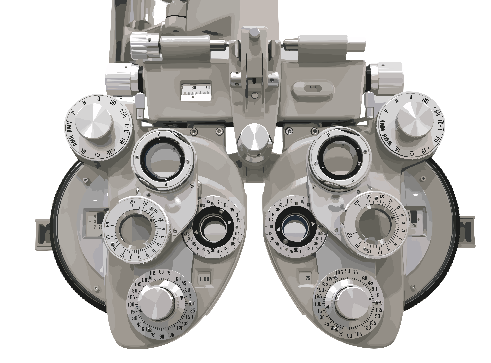

Historia
Em 2023, um grupo visionário de oftalmologistas e empreendedores decidiu unir suas paixões e conhecimentos para criar uma Clínica Oftalmológica um pouco afrente dicidiram chamar a clinica de Visão do Futuro.
Um dos principais objetivos era oferecer um dos melhores cuidados oftalmológicos disponiveis, impulsionados pela mais recente tecnologia e uma abordagem humanizada ao atendimento ao paciente.
Consultas Personalizadas:
Entendemos que cada paciente é único, e é por isso que adotamos uma abordagem personalizada para cada consulta. Nossos oftalmologistas dedicam tempo para ouvir suas preocupações e duvidas, assim sendo possivel realizar
exames detalhados e explicar claramente os resultados, para que você possa tomar decisões informadas sobre a sua saúde ocular.
Serviços
Oferecemos uma ampla gama de serviços oftalmológicos para atender às suas necessidades, incluindo: Cirurgia Ocular, Exames de Rotina, Exames de Fundo de Olho, Exames de Crianças,
Prescrição de Óculos e Lentes de Contato, Tratamento de Glaucoma eTratamento de Doenças da Retina.
Tecnologia de Ponta:
Investimos constantemente em tecnologia de ponta para oferecer diagnósticos mais precisos e tratamentos mais eficazes. Nossos equipamentos de última geração nos permitem realizar procedimentos
cirúrgicos com segurança e precisão, garantindo resultados excepcionais.
